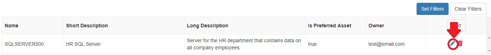
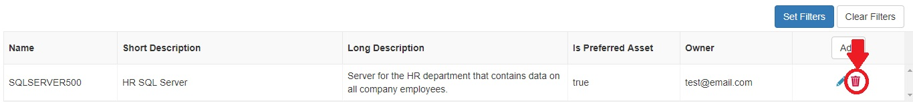
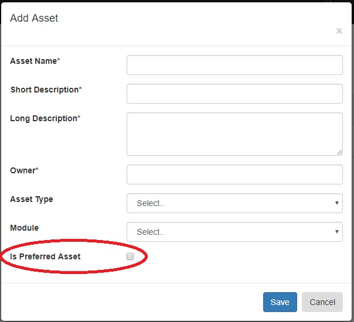
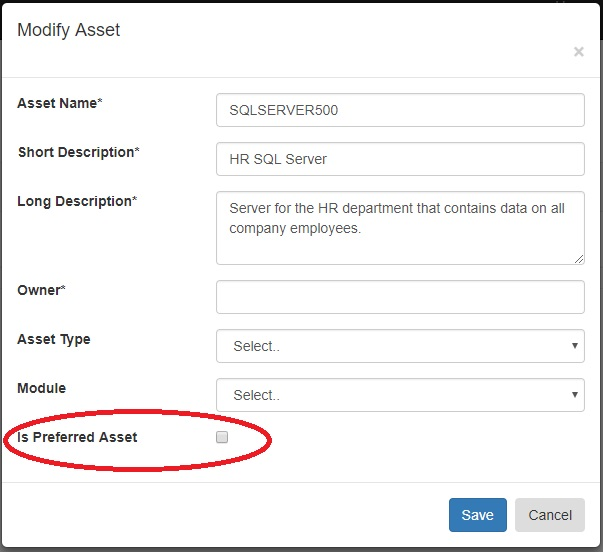
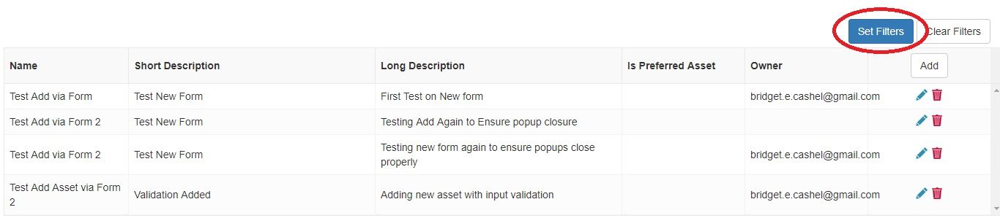
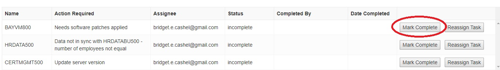
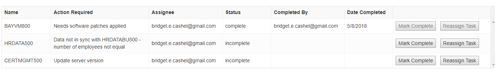
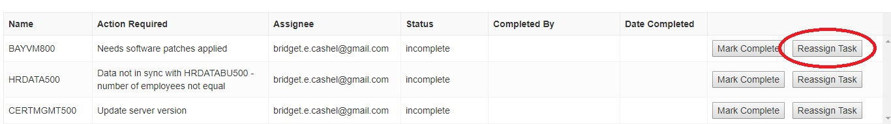

User Manual
for
BAMS
Version 1.0
Prepared By:
Bridget Cashel
Robert Grabowski
Sean Groch
Mahmuda Liza
Tu Nguyen
Advisor:
Yuan An
Stakeholder:
Bayada Home Health Care SES Office
1. Document History 3
2. General Information 4
2.1 System Overview 4
2.2 Points of Contact 4
2.2.1 Information 4
2.2.2 Help Desk 4
2.3 Definitions, Acronyms and Abbreviations 4
3. System Summary 5
3.1 System Configuration 5
3.2 Data Flows 5
4. System Set-up 5
4.1 Web Server 6
4.2 Custom Build 6
5. Using the System 6
5.1 Registration & Logging In 6
5.1.1 Registration 6
5.1.2 Logging In 7
5.2 Assets 7
5.2.1 Adding Assets 7
5.2.2 Modifying Assets 8
5.2.3 Deleting Assets 8
5.2.4 Setting Preferred Assets 9
5.2.4.1 Declaring Preferred Assets via Add Asset 9
5.4.2.2 Declaring Preferred Assets via Modify Asset 10
5.2.5 Filtering Assets 11
5.3 Loading from Data API 12
5.3.1 Bulk Load Assets 12
5.3.2 Bulk Load Data 12
5.4 Task Queue 12
5.5.1 Resolving Tasks 12
5.5.2 Re-assigning Tasks 13
5.5 Reporting 13
5.5.1 Viewing Reportings 13
5.5.2 Building Custom Reports 14
5.6 Changing User Settings 14
5.6.1 Change First Name 14
5.6.2 Change Last Name 14
5.6.3 Change Password 14
5.7 Exit System 15
5.7.1 Logging Out 15
1. Document History
|
Name
|
Date
|
Reason
|
Version
|
|
Bridget Cashel, Robert Grabowski, Sean Groch, Mahmuda Liza, Tu Nguyen
|
May 8, 2018
|
Initial draft
|
0.1
|
|
Bridget Cashel, Robert Grabowski, Sean Groch, Mahmuda Liza, Tu Nguyen
|
May 8, 2018
|
|
1.0
|
2. General Information
2.1 System Overview
BAMS is an asset management system which allows for companies to pull in data from various data sources such as active directories, servers, databases, scheduled tasks and VmWare in order to cut down on the amount of time spent handling daily tasks and help facilitate the management of large production environments. The system covers all the data sources that are common from company to company, while providing the ability for companies to integrate any custom data sources into the system. The user interface can also be customized so that its look and feel is specific to the company in terms of color schemes and logos.
BAMS can be beneficial to the following three groups of users in different ways: system admins, users with a strong technical background (i.e. programmers and system architects) and users that have little to no technical expertise (i.e. company executives and business teams). All groups will use the capabilities of BAMS to fulfill their jobs roles; however some features of the application may be more useful to some groups of users than others.
2.2 Points of Contact
2.2.1 Information
Sean Groch (Team Leader & Backend Developer) - rgroch@gmail.com
Bridget Cashel (Frontend Developer) - bridgetc94@gmail.com
Robert Grabowski (Backend Developer) - robbie.grabowski1536@gmail.com
Mahmuda Liza (Frontend Developer) - mkl75now@gmail.com
Tu Nguyen (Frontend Developer) - ivyboss94@gmail.com
2.2.2 Help Desk
Help desk information for 24/7 support is currently not available.
2.3 Definitions, Acronyms and Abbreviations
Asset - a piece of software or hardware within an information technology environment
Data Source - each asset of an IT environment that provides data to BAMS
Server - a computer designed to process requests and deliver data to other (client) computers over a local network or the Internet
Task Queue - a BAMS web application view that will contain a list of assets that need attention (i.e. updates to version number) and will provide users with the ability of marking tasks as resolved
VmWare - a company that provides virtual desktop and server applications
3. System Summary
This section provides a general overview of the system written using non-technical terminology.
3.1 System Configuration
In order for our system to work in your environment, the application needs to know some information about your environment. To handle this user-specific dependency, configuration files are used to change the behavior of the system so that the application works in the specified environment. In the build directory, there is a file called appsettings.json, appsettings.Development.json, or appsettings.Staging.json. By changing the values in these files, you alter the behavior of the system when it is running. If you don’t understand how to configure the settings provided, feel free to contact BAMS Support with questions.
3.2 Data Flows
In order for BAMS to benefit users in your company, it must have a complete path for the data to flow from the data source to the end users. The minimum requirements for this complete data path are as follows:
- The modules must be on the same machine or be network connected to the data source.
- The modules must be on the same machine or be network connected to the web server.
- The web server must be network accessible and can be referenced by name or IP. This means DNS entries must be used to route web requests to the web server.
- The web client must be network connected to the DNS server and web server.
If these requirements are met, then the data flow is set up and your system can start working.
4. System Set-up
This section provides details on the hardware needed to run this system and how to set up those components to work together.
4.1 Web Server
Out of the box, BAMS has three builds - Development, Staging, and Production. Development is meant for testing out new changes to the configuration or a new version of the system. Staging is meant to be a similar environment to Production, but without affecting users. Production is the environment where the application serves users in your environment. If you are not sure which environment you should be using, use the production build. Once you have copied the build directory onto your server, you can point a public-facing web host like IIS for Windows or Nginx and Apache for Linux to that directory. To do this, you will likely need to know the port the webserver is running on, and the executable location.
4.2 Custom Build
If the default builds are not working for your company, you have the ability to make modifications to the source code itself. The best software to do this in is Microsoft Visual Studio, although it should be noted that you will probably need some sort of licensing, which will have a cost associated with you. If you have access to Visual Studio, you can clone the project from GitHub and open the solution in Visual Studio. Once the project is opened, make your code changes and build the solution in release mode.
The second option is using the .Net Core SDK, which requires you to download version 2.0 from Microsoft’s official website. Once you have it downloaded, you can once again clone the repository to your computer. Using the command prompt, cd into the directory of the project and use the .NET CLI to deploy the project. Changes can even be made to the project using free software like Notepad++.
5. Using the System
This section provides a walkthrough of the system from initial launch to exit. The subsections are ordered to help users best understand the workflow of the system.
5.1 Registration & Logging In
A username and password are required to log into BAMS.
5.1.1 Registration
- Navigate to the URL that BAMS is running on. The name of the URL will be company dependent since the company has the ability to choose their own DNS names for all applications running on their web server(s). The default screen of the application is the Login screen. On the Login screen, you will see a ‘Register’ link at the bottom of the login form.
- Click on the ‘Register’ link. This will trigger a page redirect to the registration screen.
- Enter your first name, last name, a valid email and password (with a minimum length of 8 characters).
- Confirm the password by entering it a second time in the ‘Confirm Password’ field.
- Click the ‘Register’ button. A confirmation email will be sent to the email address provided. Without confirming the email, you won’t be able to access our application.
- Upon receipt of the confirmation email, click on the link in the email and then login to the system using your credentials.
5.1.2 Logging In
- Navigate to the URL that BAMS is running on. The default screen of the application is Login screen.
- If you are a registered user and confirmed your email, then enter your email and password to log in.
- If you haven’t registered, please click on the ‘Register’ link to be redirected to the registration screen to create an account.
- If you are a registered user but have not confirmed your email, please check your email. You should have received an email from BAMS Support with a link to confirm your email account. Please confirm your email address and then login.
- In this release, there is no ‘Resend Confirmation Link’ feature implemented. If you do not receive an email message with a confirmation link, please contact BAMS Support.
- If you are a registered and verified user and forgot the password password to your account, please click on the ‘Forgot Password’ link. You will be redirected to a ‘Forgot Password’ page. Please enter your email on that page so that a password reset link can be sent to your email address.
5.2 Assets
5.2.1 Adding Assets
- After successfully registering or logging into the system, navigate to the Assets screen by clicking on the “Assets” tab in the header of the web application.
- Click on the “Add” button in the header of the assets grid. This will trigger a pop-up to enter information about the asset.
- Fill in the fields in the pop-up with information about the asset. Note that the Asset Name, Short Description, Long Description and Owner fields are required for each asset. After filling out the add asset form, with at a minimum the required fields, click the “Save” button.
- After saving the asset, a pop-up will appear stating that the add asset operation was successful. After closing that pop-up, the grid will refresh and the newly added asset will be visible.
5.2.2 Modifying Assets
This operation can only be performed if there are existing assets in the system. To add assets to the system, please see the instructions for adding assets in section 5.2.1.
- After successfully registering or logging into the system, navigate to the Assets screen by clicking on the “Assets” tab in the header of the web application.
- Click on the pencil icon in the last column in the row of the asset you would like to edit. This will trigger a pop-up to modify existing information about the asset.

- Change the values of the desired field(s) for the selected asset. Note that the Asset Name, Short Description, Long Description and Owner fields are required fields and that they all must still have values after modifying the asset. After changing the desired fields in the modify asset form, with at a minimum the required fields still having values, click the “Save” button.
- After saving the modified asset, a pop-up will appear stating that the modified asset operation was successful. After closing that pop-up, the grid will refresh and all changes to the asset will be visible.
5.2.3 Deleting Assets
This operation can only be performed if there are existing assets in the system. To add assets to the system, please see the instructions for adding assets in section 5.2.1.
- After successfully registering or logging into the system, navigate to the Assets screen by clicking on the “Assets” tab in the header of the web application.
- Click on the trash can icon in the last column in the row of the asset you would like to delete. This will trigger a confirmation pop-up to confirm the delete operation for the selected asset.

- In the confirmation pop-up, click the “Yes” button to confirm the delete operation. This will automatically refresh the assets grid and the deleted asset will no longer be present in the grid.
5.2.4 Setting Preferred Assets
This operation can only be performed if there are existing assets in the system. To add assets to the system, please see the instructions for adding assets in section 5.2.1.
Preferred assets can be declared either when adding the asset to the system or by modifying the data of the asset using the modify assets feature. When declaring a preferred asset, an asset is considered a preferred asset for only the user that declared it as a preferred asset, not all users in the system.
5.2.4.1 Declaring Preferred Assets via Add Asset
- After successfully registering or logging into the system, navigate to the Assets screen by clicking on the “Assets” tab in the header of the web application.
- Click on the “Add” button in the header of the assets grid. This will trigger a pop-up to enter information about the asset.
- Fill in the fields in the pop-up with information about the asset. Pay attention to the field titled “Is Preferred Asset”. If you would like the asset to be one of your preferred assets, check the corresponding checkbox.
- Click the “Save” button to add the asset to your list of preferred assets.

5.4.2.2 Declaring Preferred Assets via Modify Asset
- After successfully registering or logging into the system, navigate to the Assets screen by clicking on the “Assets” tab in the header of the web application.
- Click on the pencil icon in the last column in the row of the asset you would like to edit. This will trigger a pop-up to modify existing information about the asset.
- Fill in the fields in the pop-up with information about the asset. Pay attention to the field titled “Is Preferred Asset”. If you would like the asset to be one of your preferred assets, check the corresponding checkbox.

- Click the “Save” button to add the asset to your list of preferred assets.
5.2.5 Filtering Assets
Many companies have large production assets, which in turn, means a large number of assets. Hence, the number of assets in the assets grid could be hundreds or even thousands. Filtering comes in handy since it allows users to view only the subset of assets that they care about.
- After successfully registering or logging into the system, navigate to the Assets screen by clicking on the “Assets” tab in the header of the web application.
- Click on the “Set Filters” button to the right above the assets grid. This will trigger a pop-up for the user to apply filters to as many or as little fields as he/ she desires.

- After entering the desired filters, click the “Apply Filters” button in the pop-up. This will automatically close the pop-up form for applying filters and filter the grid down to the subset of assets.
5.3 Loading from Data API
5.3.1 Bulk Load Assets
Assets are added by first registering modules in the config file with the schema and Module configuration details for that particular module. From here, the asset can be added from the Asset Screen using the Add Asset functionality, selecting the appropriate module for the asset.
5.3.2 Bulk Load Data
Once a module is configured and registered and an asset has been created to use a module, the application will begin to accept asset data using the API’s data connection and will accept data at any time without any further steps. A properly implemented module using the provided module support libraries will convert the data being sent to a format the API can understand, requiring no additional details from users.
5.4 Task Queue
5.5.1 Resolving Tasks
- After successfully registering or logging into the system, navigate to the Task Queue screen by clicking on the “Task Queue” tab in the header of the web application.
- Click on the “Mark Complete” in the last column in the row of the task you would like to resolve. This will trigger a confirmation pop-up to confirm that this is the task you would like to resolve.

- In the confirmation pop-up, click the “Yes” button to confirm task resolution. This will automatically refresh the task queue and the completed task will be reflected as complete in the task queue, along with the email address of the user who completed it and the date completed.

5.5.2 Re-assigning Tasks
- After successfully registering or logging into the system, navigate to the Task Queue screen by clicking on the “Task Queue” tab in the header of the web application.
- Click on the “Reassign Task” in the last column in the row of the task you would like to assign to another user. This will trigger a pop-up that will ask for the email address of the user that will be assigned that task.

- Enter the email address of the user you would like to assign the task to. The email address entered must belong to a registered user in BAMS. Otherwise, the system will not allow the task to be reassigned.
- Click the “Save” button. A pop-up stating that the tasks has been successfully reassigned will appear and the task queue will automatically refresh. When the task queue is refreshed, the task that was assigned to a different user will no longer be present in the current user’s task queue.
5.5 Reporting
5.5.1 Viewing Reportings
- After successfully registering or logging into the system, navigate to the Reporting screen by clicking on the “Reporting” tab in the header of the web application
- Click on the dropdown that stores the predefined reports in the server. This will show a list of predefined reports that were previously created in the web system.
- Select the report from the dropdown to be displayed in the grid by clicking on the report name.
- After running the report in the database, the results of the report will be displayed on the grid.
5.5.2 Building Custom Reports
- After successfully registering or logging into the system, navigate to the Reporting screen by clicking on the “Reporting” tab in the header of the web application
- Click on the dropdown that stores the predefined reports in the server. This will show a list of predefined reports that were previously created in the web system.
- Click on the “Custom Reports” button. This will trigger a pop-up for the user to select filters for the report. A user is able to apply as many or as little fields as he/ she desires.
- Click the “OK” button to apply the desired filters to the selected report.
- After running the query in the database, the results of the report will be displayed on the grid.
5.6 Changing User Settings
5.6.1 Change First Name
- Click the username in the top-right corner of the screen to navigate to User Profile screen.
- To edit the first name, click on the edit button on right side of that field. This will enable the first name field and allow the user to make edits to the field.
- After modifying the first name, click save button on the right side of that field. The save operation is successful as long as no error message pops up on the screen.
5.6.2 Change Last Name
- Click the username in the top-right corner of the screen to navigate to User Profile screen.
- To edit the last name, click on the edit button on right side of that field. This will enable the last name field and allow the user to make edits to the field.
- After modifying the last name, click save button on the right side of that field. The save operation is successful as long as no error message pops up on the screen.
5.6.3 Change Password
- Click the username in the top-right corner of the screen to navigate to User Profile screen.
- To edit the password, click on the edit button on right side of that field. This will open a pop-up with a field for old password, new password and confirm new password.
- Complete all three fields and click the save button in the pop-up. The save operation is successful as long as no error message pops up on the screen.
- To exit the pop-up without changing the account password, click the ‘Cancel’ button.
5.7 Exit System
5.7.1 Logging Out
- Hover over the name from top-right corner of any screen in the application. On hover, a dropdown with a logout option will appear.
- Click “Logout” to exit the application.